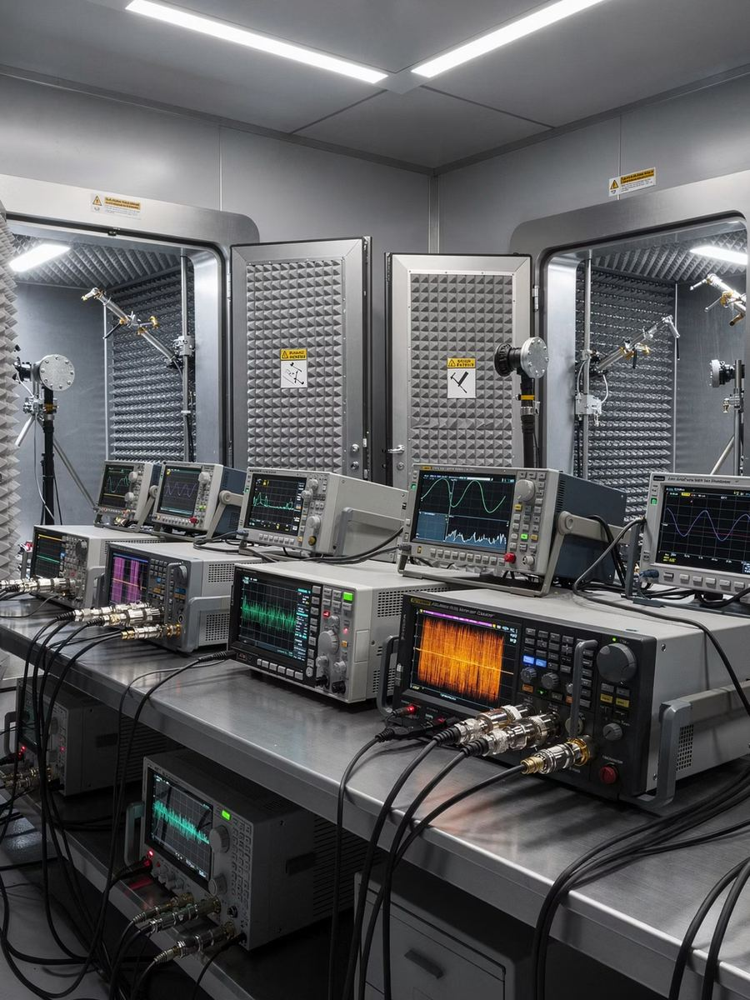

Spectral MatrixElectronic Warfare as a Service, by Walkin Warden
Software that makes jammers already in the field effective again against the new smart receivers, without replacing the hardware.
For any existing jammer and any enemy receiver, Spectral Matrix produces the most effective waveform in an automated lab, and delivers it to the army as a file loaded onto equipment it already owns.
- The raise
- $2M Pre-Seed
- First milestone
- Working POC in about 8 months
- The model
- EWaaS: integration, then an annual subscription
- What changes for the customer
- Existing hardware returns to service
Input
The existing jammer
The equipment the army has already bought and fielded. It stays exactly as it is.
Spectral Matrix
Automated lab
Finds the waveform that beats the threat's receiver, within the limits of that same jammer.
Output
Updated signal
A file loaded onto the jammer like any software update, in the field or remotely.
Against
The current threat
The drone with the smart receiver, which the generic jammer no longer moves.
The problem
The drones learned to evade. The jammers stayed behind.
Until early 2025 a broadband jammer blocked the navigation signal, and the drone lost its way far from the target. Today a cheap smart receiver sits on every drone, and that exact same jammer barely moves it.
Typical figures from the field. A generic broadband jammer against a standard navigation receiver, and the same jammer at the same power against an off-the-shelf receiver with built-in anti-jamming and anti-spoofing.
Until 2025
Generic jammer
Standard navigation receiver
The jammer works. The drone loses its way, typically more than twenty kilometres from the target.
Today
Same jammer
Smart receiver, $20 to $200 off the shelf
Same jammer, same power. The drone carries on almost all the way to the target, displaced by about fifty metres.
The customer already owns the hardware. The threat evolved faster than the transmission technique.
An electronic warfare inventory bought for hundreds of millions of dollars, fielded today on active fronts, does nothing against the current threat. Not because of the hardware. Because of the signal it transmits.
What changes
Do not replace the jammer. Change what it transmits.
The idea is familiar to professionals, and it is called transmission technique adaptation. What did not exist is anyone doing it for navigation jammers, fast, and without touching the hardware.
No new hardware platform
The jammer already fielded stays exactly as it is. We do not need it in our hands, only its datasheet.
No procurement cycle measured in years
There is no hardware tender. The contract sits on the upgrade and sustainment budget, which is approved year after year.
A technique matched to every receiver
For each jammer and threat pair, the most effective waveform is built in the lab, against the real receiver.
An update that reaches equipment already in the field
The file is loaded through the jammer's operating software, on portable media at the operator or broadcast remotely from the operations centre to every system at once.
An answer in days, not in years
When the enemy changes receiver, we change the receiver in the chamber and run again. The system works during force build up, before the fighting.
The loop
An automated lab that finds the right signal for every jammer and threat pair.
Today this is done by hand, by a team of specialists, and it takes a full working week per threat. Spectral Matrix turns the process into a loop that runs on its own.
Simulate the existing jammer
The customer's jammer specification is loaded as constraints on the lab's transmission equipment. The jammer itself does not need to reach us.
Place the target receiver in the lab
The real enemy receiver sits in a shielded chamber and receives a simulated sky, including a flight path.
Test a transmission technique
The system transmits against the receiver, within the limits of the real jammer.
Measure the receiver's response
Whether the receiver lost its lock on the satellites. That is what decides whether the drone stays on course or not.
Improve and repeat
An optimisation layer produces a more precise version for the next run, until the customer's hardware delivers its maximum.
A signal file
A validated transmission technique, as a file loaded onto the existing jammer like any software update. No hardware, no installation, no tender.
Architecture
The architecture, for the professional reader
A closed test environment that holds both sides inside it: the constraints of the customer's jammer, and the real receiver of the threat. Between them runs a measurement and optimisation loop, and the only output that leaves is a validated transmission technique.
Constraint
The customer's jammer constraints
Bandwidth, power and exciter, the datasheet, as hard limits on everything the lab transmits.
Environment
RF / GNSS test environment
A shielded chamber, a broadband signal generator and a satellite navigation simulator that produces a full sky.
Target
The target receiver
The real receiver of the threat, from a mapped library of commercial receivers.
Measure
Measurement
Whether the receiver held lock, lost it, or was displaced. The receiver logs are analysed run after run.
Optimise
Optimisation engine
Analyses the result and produces the waveform for the next run. The loop closes with no human inside it.
Output
Validated transmission technique
A signal file for the customer's jammer, documented against the receiver it was built against.
↺ The loop repeats

The advantage
The advantage compounds: every receiver mapped makes the next customer cheaper and leaving more expensive.
This is not the advantage of a single algorithm. It is the combination of a library that grows, measurement data that accumulates, integration into each customer's hardware, and a service that renews for as long as the threat keeps changing.
A receiver library that grows with every customer
The off the shelf receivers we map are our asset, and they are shared. A receiver mapped for one customer serves every customer after it, and the second lab costs less than the first.
Measurement data that accumulates run after run
Every run against a real receiver adds a measured result. The optimisation engine starts each new threat from a more advanced point.
Automation of work only a handful of specialists can do
A week of work from an RF engineer, a physicist and a signal processing specialist, for every jammer and threat pair, becomes days with no human inside the loop.
Integration into each customer's equipment
The integration builds a lab environment that simulates the customer's equipment down to the datasheet level. Whoever has done that once at a customer is the address for every update that follows.
Recurring updates for as long as the threat keeps changing
The annual service streams new techniques to the fielded systems, remotely, in response to new threats in the field. The threat changes in weeks, and the subscription lives on that.
The customer's own outputs stay with the customer
The customer's jammer specifications, and the signal files derived from them, are passed to no one. The shared library is a library of receivers, not of customers.
The more receiver families are mapped, the faster the system becomes for every new customer, and the more the annual service is worth to every existing one. That is the asset that is built over time, not the single file.
Alternatives
The threat changes in weeks. The two other ways to answer it take years, or manpower that does not exist.
Anyone who knows the field asks immediately: how is this different from what is already sold to armies? This is the answer, in business terms.
| Buy new hardwareincluding a dedicated counter drone system | Manual R&D inside the armyan engineer tuning a signal to one receiver | Spectral Matrixa signal file for jammers already fielded | |
|---|---|---|---|
| Response time to a new threat | Years: tender, production, integration | Weeks to months per jammer and threat pair | Days |
| Hardware replacement | Yes, a new system in place of the existing one | No | No. The fielded hardware stays |
| The procurement process | A hardware tender, tens to hundreds of millions of dollars | Internal, dependent on individuals | One time integration, then a subscription from the upgrade and sustainment budget |
| Specialist manpower | At the manufacturer, not at the customer | A rare team that almost no army has | Automatic. No human inside the loop |
| Recurring updates | A new procurement cycle for every threat generation | Every threat from scratch | New techniques streamed continuously, remotely |
| Ability to scale | One system per purchase | Linear in manpower | A shared library: the second lab costs less than the first |
| Switching cost for the customer | Lock in to the hardware manufacturer | None, and no continuity either | The customer's own threat library, and long term intelligence sharing |
Systems that detect and geolocate jammers and spoofers on the opposing side complement us rather than compete with us: they reveal where the transmission comes from, we determine what to transmit.
Business model
A one time integration, and after it recurring revenue for as long as the threat keeps changing.
The integration adapts the lab to the customer's equipment. The annual subscription streams new techniques to the fielded systems. The recurring revenue is the main thing, and the integration is what makes it possible.
Initial integration, NRE
per customer · one time
Integration and setup
What it buys
- Initial characterisation and research against the threats that matter to the customer
- A lab environment that simulates the customer's equipment, down to the datasheet level
- Adaptation of the software and the optimisation engine to the local hardware
EWaaS, recurring service
ARR per customer · year after year
Annual service
What it buys
- New techniques streamed continuously to the fielded systems
- Building and maintaining the customer's threat library, fully segregated
- Remote updates as an immediate response to new threats in the field
Step 1 of 5
Knowledge of a new receiver
Every run against a real receiver adds a measured result. Each new threat the lab meets becomes knowledge the engine starts from next time.
Hover or tap a step on the wheel to read it.
Knowledge of a new receiver
Every run against a real receiver adds a measured result. Each new threat the lab meets becomes knowledge the engine starts from next time.
A larger threat library, reusable
A receiver mapped for one customer serves every customer after it. The library of off the shelf receivers is the shared asset.
Faster integration, broader coverage
With more receiver families mapped, the second lab costs less than the first and covers more of the threat from day one.
An annual service worth more
New techniques stream to the fielded systems as the threat changes. The more the library covers, the more each year of service delivers.
A higher cost of leaving
The customer's own threat library, the integration into its equipment and the continuity of updates all stay with the service.
Two separate layers, stated explicitly: the library of off the shelf receivers we map is our asset, and it is shared. The customer's jammer specifications and the signal files derived from them remain his alone.
Market
The market, and where we enter first
The electronic warfare market is growing, and the fastest growing part of it is defence against drones. The first entry is at the point where technical feasibility and demand meet, and that is exactly what the POC tests.
TAM
The global electronic warfare market, 2026. Growing rapidly in the wake of drone proliferation.
The relevant segment
Counter drone defence systems and navigation signal jamming. The growth engine, and the part we are entering.
The entry point
The most common receiver on the enemy side, against the world's most widely fielded weapon class
The POC starts there: a generic jammer against the most common receiver. Success at that point is an answer for most of the market already in the first phase.
Why now
Why now
Five things happened one after another, and together they open the window: the receiver became cheap, the inventory stopped working, the threat accelerated, procurement is too slow, and the only answer fast enough is software.
Cheap smart receivers became the default
Off the shelf components at $20 to $200, with built in protections. Since the start of 2025 this is every drone encountered, not the exception.
The existing jammer inventory stopped working
Equipment bought for hundreds of millions of dollars and fielded on the fronts does not move the new drone. Not because of the hardware, because of the signal.
The threat changes in weeks
Every receiver change on the enemy side is a new threat. Whoever answers in years is always behind.
Hardware procurement takes years
Tender, production, integration. By the time the new system arrives, the receiver it was built against has already been replaced.
A signal update arrives in days
A file loaded onto the existing equipment, in the field or remotely from the operations centre to every system at once. It is the only answer as fast as the threat.
And why nobody else is doing it
Weapon manufacturers whose model rewards reviving existing inventory
The defence industry sells new systems and maintenance contracts. Upgrading equipment that has already been sold runs against its revenue model.
Dedicated centres doing this for navigation jammers
What the major powers staff with hundreds of people to do for fighter aircraft does not exist as an organised capability for navigation jammers. Today it is done by hand, by a handful of specialists, and slowly.
Roadmap
What exists today, what this round funds, and what comes after a successful POC
Three categories of capability, in ascending order of difficulty, on the same lab. This round funds the first.
Exists today
before the round
Architecture, initial software, library
A full technical architecture, an initial version of the software, a mapped target receiver library, an initial lab at a basic level.
What the Pre-Seed funds
months 1 to 8, POC
Jamming
Closing the loop end to end against a generic jammer and 3 leading threat receivers, starting with the most common receiver on the enemy side.
After a successful POC
second phase
Spoofing
A second algorithm category on the same lab: instead of drowning the receiver in noise, convincing it that it is somewhere else.
Later
third phase
Meaconing
The highest level of difficulty, and an answer to the most advanced receivers already on the market.
Status
What already exists, and what the POC has to prove
An explicit separation, so that a future capability does not read as an existing one.
Exists and proven
5- A full technical architecture of the system, including a procurement specification ready for RFQ down to the individual connector.
- An initial version of the software is written. The loop is waiting for equipment.
- A mapped target receiver library: 6 commercial receivers, from the most vulnerable up to research grade, with a capability map for each one.
- A core team: the founder and 4 more professionals from the field. An initial lab operating at a basic level.
- Validation against the field: the problem and the solution were examined with six senior electronic warfare professionals.
What the POC has to prove
3- Closing the loop end to end, automatically, on the lab's full equipment.
- Proven capability against 3 leading drone threats, starting with the most common receiver on the enemy side.
- An initial engagement (LOI) with a first defence body, for cooperation and a field trial.
Team
The team that did this by hand once, and is now building the machine
Three of the five served in electronic warfare against satellite navigation systems. The other two bring defence R&D and national level deals.
-
CEO & Founder
Noam Glam
Operational electronic warfare
The operational electronic warfare unit, dozens of operational missions against satellite navigation systems. Developed counter drone ordnance that is now past a military trial. Partner in a technology company for the optimisation of AI algorithms.
Knows the problem from the operational side, and performed himself the manual adaptation that the system turns automatic.
-
CTO / Tech Lead
AI and RF systems specialist
Defence R&D
Led research and development at a public defence company, holds 3 patents in communications, and brings experience from two previous exits.
Overall technological responsibility for the system.
-
RF & Algorithms
David Lebedev
RF and GNSS measurement
Former spectrum researcher and technical team lead in an electronic warfare unit. Today an RF engineer in the defence industry, working on RF and GNSS measurement and on systems integration.
The lab, receiver log analysis and algorithm development.
-
AI & Automation
Nir Zari
AI and backend
Former spectrum researcher in an electronic warfare unit, and an RF electronics engineer. AI developer and backend programmer.
Builds the automation that runs the loop.
-
Strategic Advisor
Amit Sade
Tenders and national level deals
Proven experience in tenders and in national level deals.
The business side, and the relationships with defence bodies and funds.